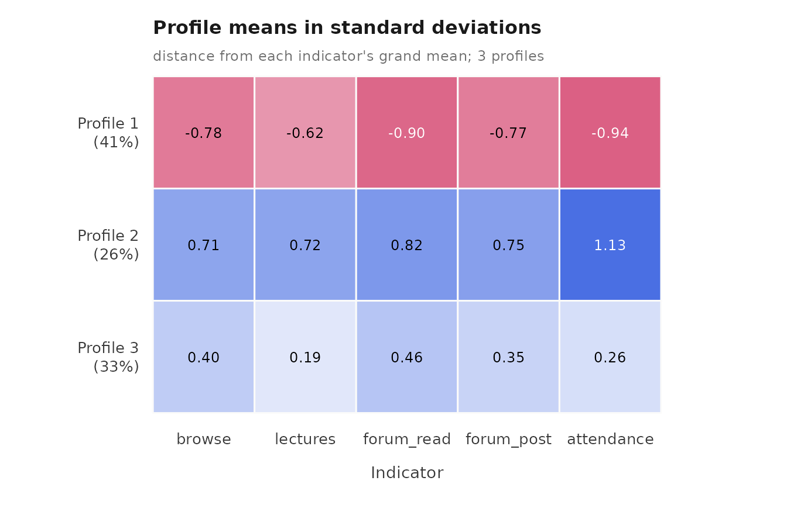
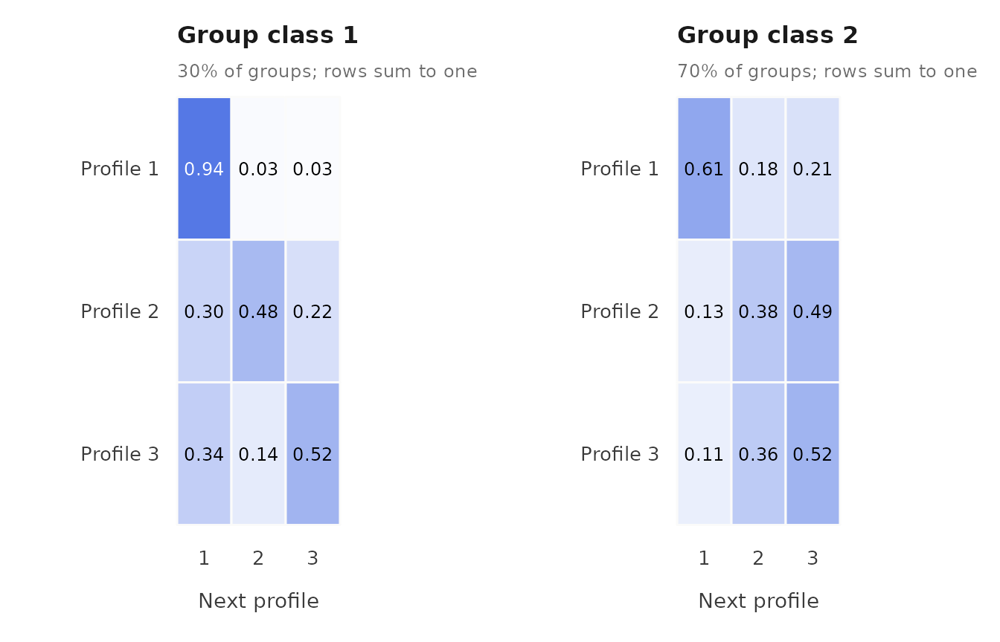
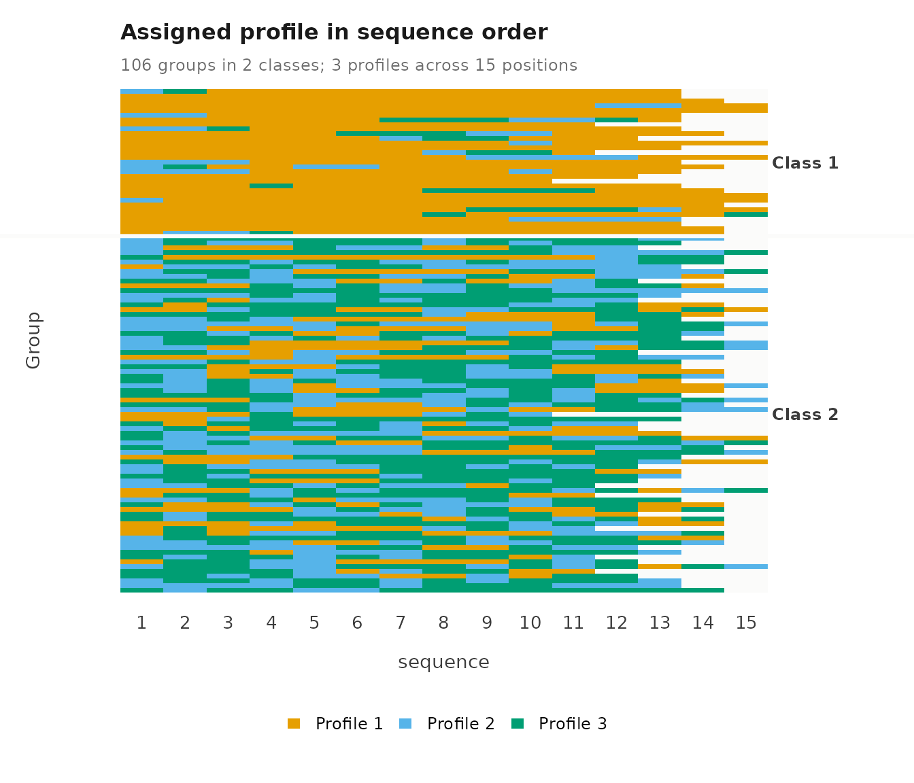
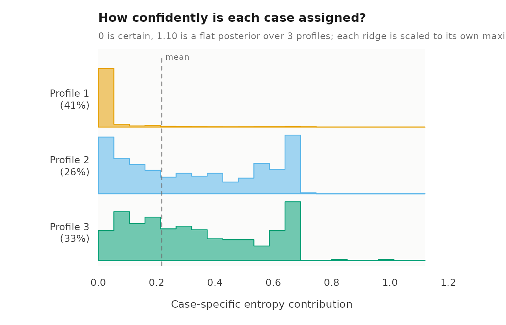
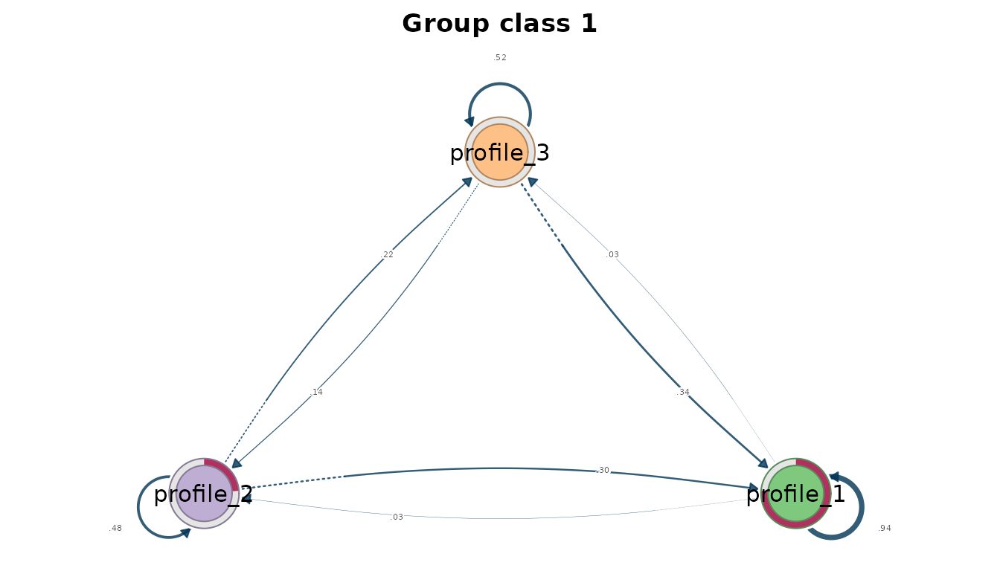
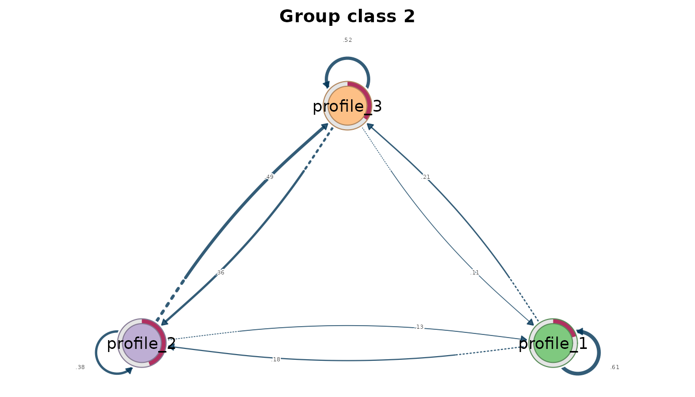

Case study: Latent transition analysis of course engagement
Source:vignettes/articles/case-engagement-transitions.Rmd
case-engagement-transitions.RmdLatent transition analysis (LTA) estimates the probability of moving from one latent profile to another between consecutive occasions (Collins & Lanza, 2010). With group classes, each class has its own starting distribution and its own transition matrix, so the classes separate students who differ in how their engagement changes from students who differ only in where it starts.
Data and model
course_engagement holds 1,422 course enrolments of 106
students, ordered within each student by sequence. The five
indicators are simulated on the log1p scale of activity
counts and standardized within course. The data are synthetic and
revisit the design of Saqr and López-Pernas (2021), who asked how
students’ online engagement develops across a program. That study
identified course-level engagement states and longer-term trajectories
with latent class analysis and hidden Markov models. Here, three
profiles and two student classes are working choices for illustrating
the transition model; they do not establish the number of profiles or
reproduce the published estimates.
For student at course position , is the latent profile and the student’s class. The model estimates
- the initial probabilities ,
- the transition probabilities , which sum to one across destinations ,
- and a Gaussian mean and variance for each profile and indicator.
The transitions are first order and homogeneous: the next profile depends only on the current profile and the student’s class, and the probabilities are the same at every position. Profile means and variances are shared across positions and classes, so a change of profile is a change of state. Indicators are independent within a profile under the default diagonal covariance. The fit can fail to reach the global maximum from a single start, and a transition that is rare within a class is estimated from little information; the expected count of each transition shows how much.
library(latents)
vars <- c("browse", "lectures", "forum_read", "forum_post", "attendance")
moves <- lta(course_engagement, vars, "student", n_profiles = 3,
n_group_classes = 2, time = "sequence", n_starts = 10, seed = 1)
get_results(moves, "starts")
#> start log_likelihood converged iterations error
#> 1 1 -8243 TRUE 91 <NA>
#> 2 2 -8243 TRUE 84 <NA>
#> 3 3 -8243 TRUE 99 <NA>
#> 4 4 -8243 TRUE 121 <NA>
#> 5 5 -8243 TRUE 99 <NA>
#> 6 6 -8243 TRUE 90 <NA>
#> 7 7 -8243 TRUE 100 <NA>
#> 8 8 -8243 TRUE 189 <NA>
#> 9 9 -8243 TRUE 83 <NA>
#> 10 10 -8243 TRUE 83 <NA>All ten starts converge to the same log likelihood, so the solution is replicated within this seed’s starts.
The profiles
plot() draws the profile means across the indicators,
with point size showing profile prevalence.
plot(moves)
get_results(moves)
#> profile indicator mean variance standard_deviation
#> 1 1 browse -0.7760 0.5149 0.7175
#> 2 1 lectures -0.6117 0.5417 0.7360
#> 3 1 forum_read -0.8882 0.3540 0.5950
#> 4 1 forum_post -0.7607 0.4149 0.6441
#> 5 1 attendance -0.9293 0.3727 0.6105
#> 6 2 browse 0.7051 0.5295 0.7277
#> 7 2 lectures 0.7107 0.7967 0.8926
#> 8 2 forum_read 0.8064 0.4652 0.6821
#> 9 2 forum_post 0.7463 0.5773 0.7598
#> 10 2 attendance 1.1223 0.2072 0.4551
#> 11 3 browse 0.3955 0.6100 0.7810
#> 12 3 lectures 0.1882 0.7589 0.8712
#> 13 3 forum_read 0.4534 0.4578 0.6766
#> 14 3 forum_post 0.3437 0.7144 0.8452
#> 15 3 attendance 0.2524 0.2041 0.4517Profile 1 is the lowest on every indicator, profile 2 the highest, and profile 3 lies between them; their attendance means are -0.929, 1.122 and 0.252. The profiles are therefore lower, higher and intermediate activity. The heatmap shows the same means as standard deviations from each indicator’s grand mean.
plot(moves, what = "heatmap")
The contrast between profiles is present on all five indicators, so the profiles differ in overall activity more than in its composition.
Where students start
In the "initial" table, probability is
,
the chance of starting in each profile. prevalence is the
expected share of all of a class’s enrolments in that profile, across
the whole history, and group_class_probability is the share
of students in the class.
get_results(moves, "initial")
#> group_class profile probability prevalence group_class_probability
#> 1 1 1 7.621e-01 0.81891 0.3007
#> 2 1 2 2.379e-01 0.09691 0.3007
#> 3 1 3 3.452e-10 0.08418 0.3007
#> 4 2 1 2.035e-01 0.22962 0.6993
#> 5 2 2 4.453e-01 0.33446 0.6993
#> 6 2 3 3.512e-01 0.43592 0.6993Student class 1, with 30.1% of students, starts in the lower-activity profile with probability 0.762 and in the higher-activity profile with probability 0.238; its probability of starting in the intermediate profile is effectively zero. Class 2, with 69.9% of students, starts across all three profiles, with probabilities 0.204, 0.445 and 0.351. Starting and overall shares differ: class 1 starts in the lower profile with probability 0.762, but 0.819 of its enrolments are expected there over the whole history, while class 2 starts in the higher profile with probability 0.445 and spends 0.334 of its enrolments there.
How engagement changes
The "transitions" table gives
for every class and pair of profiles. stable marks staying
in the same profile. expected_count is the posterior
expected number of such transitions in the data, so it can be
fractional, and it shows how much information supports each estimate.
estimated = FALSE would mark a row the data cannot inform,
because the profile is never occupied before a student’s last course;
such a row holds uniform placeholder values. Every row is estimated in
this fit.
get_results(moves, "transitions")
#> group_class from to probability expected_count stable estimated group_class_probability
#> 1 1 1 1 0.93849 303.367 TRUE TRUE 0.3007
#> 2 1 1 2 0.03132 10.123 FALSE TRUE 0.3007
#> 3 1 1 3 0.03019 9.757 FALSE TRUE 0.3007
#> 4 1 2 1 0.29654 11.687 FALSE TRUE 0.3007
#> 5 1 2 2 0.48238 19.012 TRUE TRUE 0.3007
#> 6 1 2 3 0.22108 8.716 FALSE TRUE 0.3007
#> 7 1 3 1 0.33738 11.396 FALSE TRUE 0.3007
#> 8 1 3 2 0.14194 4.790 FALSE TRUE 0.3007
#> 9 1 3 3 0.52068 17.579 TRUE TRUE 0.3007
#> 10 2 1 1 0.61440 127.787 TRUE TRUE 0.6993
#> 11 2 1 2 0.17636 36.672 FALSE TRUE 0.6993
#> 12 2 1 3 0.20923 43.523 FALSE TRUE 0.6993
#> 13 2 2 1 0.12761 38.973 FALSE TRUE 0.6993
#> 14 2 2 2 0.37861 115.606 TRUE TRUE 0.6993
#> 15 2 2 3 0.49378 150.816 FALSE TRUE 0.6993
#> 16 2 3 1 0.11405 46.328 FALSE TRUE 0.6993
#> 17 2 3 2 0.36217 147.074 FALSE TRUE 0.6993
#> 18 2 3 3 0.52378 212.792 TRUE TRUE 0.6993The transition plot draws each class’s matrix as a heatmap, with the origin profile in rows and the destination in columns.
plot(moves, what = "transitions")
In class 1, lower activity persists with probability 0.938, estimated from 303 expected transitions. Each of its other transitions rests on fewer than 20 expected transitions, because class-1 students rarely leave the lower profile. Class 2 moves between profiles. Its students remain in the lower profile with probability 0.614, move from higher to intermediate activity with probability 0.494, and from intermediate to higher with probability 0.362. Class 1 is therefore a persistently low-engagement class, and class 2 a class whose engagement changes from course to course.
Sparse and boundary estimates
Some estimates rest on very little information. Class 1’s probability of starting in the intermediate profile is at its lower bound, because no class-1 student is expected to start there. Class 1’s transitions out of the higher and intermediate profiles rest on between 4.8 and 19.0 expected transitions each, because its students rarely leave the lower profile. A probability near zero shows that the data carry little information about that movement, not that the movement is impossible. Estimates like these can also mean that the chosen number of classes divides the available transitions too finely.
Assigned sequences
The sequence plot shows each student’s modal profile at each course position, one row per student. Modal assignment discards classification uncertainty.
plot(moves, what = "sequences")
get_results(moves, "sequence_summary")
#> group_class groups observations mean_length median_length shortest longest complete gaps
#> 1 1 31 417 13.45 13 10 15 8 0
#> 2 2 75 1005 13.40 14 10 15 16 0The summary gives the number of students and courses in each assigned class. Sequence lengths differ between students, so the rows of the plot end at different positions.
Classification uncertainty
get_results(moves, "entropy")
#> level n_classes n_units entropy_sum relative_entropy
#> 1 individuals 3 1422 309.78 0.8017
#> 2 groups 2 106 16.35 0.7774Relative entropy is 0.802 for enrolments and 0.777 for students. The entropy plot shows, within each profile, how the per-case entropy contributions are distributed, and the posterior plot shows the posterior probability of each case’s assigned profile.
plot(moves, what = "entropy")
plot(moves, what = "posteriors")
Both levels retain uncertainty, so an analysis that replaces the posteriors by modal assignments treats some enrolments and students as more certain than the model estimates them to be.
Transition networks
get_tna() returns the marginal transition matrix as a
model of the tna package (Tikka et al., 2025). It pools the posterior
expected transition counts across classes and normalizes them, so it
uses the estimated transitions, not transitions counted from modal
assignments. get_group_tna() returns one network per
class.

per_class <- get_group_tna(moves)
plot(per_class)

The class networks show the two patterns of the transition table: a dominant self-loop on the lower profile in class 1, and movement among all three profiles in class 2.
Limitations
The model assumes constant transition probabilities across course
positions, so change specific to one stage of the program is averaged
over positions. Transitions are between successive observed courses,
which can differ in duration, content and assessment. Class differences
describe patterns in engagement histories and do not identify their
causes. Standard errors, likelihood-ratio tests and class enumeration
are not available for transition models, so the number of profiles and
classes here is a working choice. The diagonal covariance ignores the
association between attendance and the click measures,
which the evaluation vignette shows is present in these data; unmodelled
dependence can be absorbed by extra profiles and change the apparent
transitions. Transitions supported by few expected counts, such as those
out of the higher and intermediate profiles in class 1, should not be
interpreted.
References
Collins, L. M., & Lanza, S. T. (2010). Latent class and latent transition analysis. Wiley.
Saqr, M., & López-Pernas, S. (2021). The longitudinal trajectories of online engagement over a full program. Computers & Education, 175, 104325. https://doi.org/10.1016/j.compedu.2021.104325
Tikka, S., López-Pernas, S., & Saqr, M. (2025). tna: An R package for transition network analysis. Applied Psychological Measurement. https://doi.org/10.1177/01466216251348840